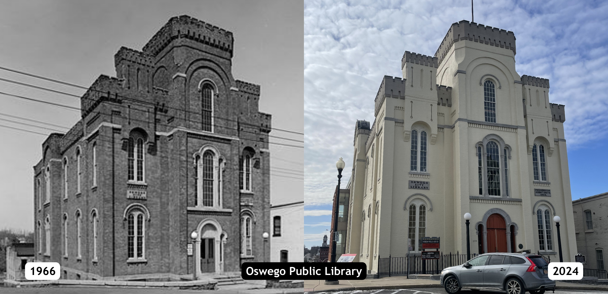
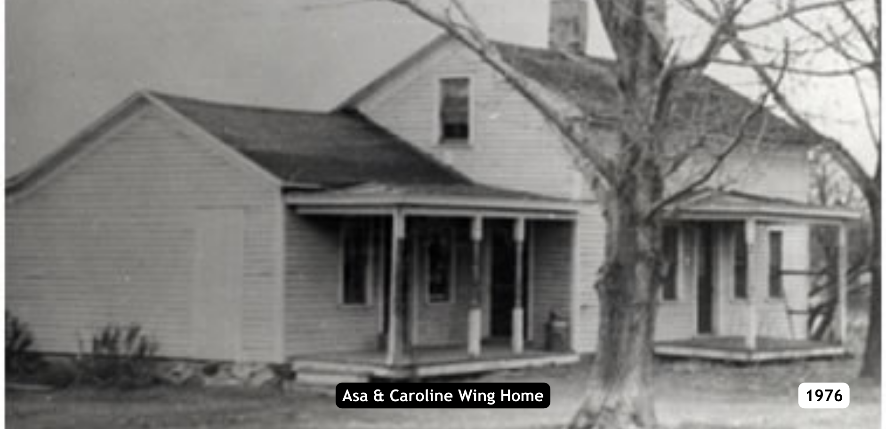

UNDERGROUND RAILROAD




This tour was created from extensive research in period documents, letters and newspapers done in 1998-2002 for a project called Freedom Trail. The main researchers and writers were Judith Wellman, Barbara Dix, and Helen Breitbeck. They created a pamphlet driving tour, interpretive panels, and historic markers at 34 verified sites. Most of the narratives in the tour are created from their writings.
There are two eras in the history of the Underground Railroad in New York. Before 1850: Most northern states gradually abolished slavery in the first half of the 1800’s (New York in 1817) and if a person escaped into a free state in the north, they were generally considered safe. Many black families settled in Oswego County in the 1830s and 40s because this part of the country was known to be liberal, progressive, and sympathetic to the abolition of slavery. Several became businessmen and were active in the abolition movement. After 1850: When the Fugitive Slave Act was passed in 1850, the area became more dangerous for African Americans. The law required that slaves be returned to their owners, even if they were in a free state. It also made the federal government responsible for finding, returning, and trying escaped slaves. So Underground Railroad routes were created into Canada. The Port of Oswego was an important departure point after 1850. Freedom seekers embarking on the right steamer here ended up in Kingston or Toronto, Ontario. Another escape route through the county beside the Oswego Canal, started in Syracuse, extended north on the Salt Road (New York State Route 11) turned at Colosse and came into Mexico (today’s Route 69). Then instead of coming into the city of Oswego, the route went north on Route 3 to Henderson Harbor, Sackett’s Harbor, or even a further distance down the river. The abolitionists who ran the routes were very organized and communicated extensively with each other. Freedom seekers were hidden in homes and outbuildings, and transported in carts, usually at night. Stories about tunnels and all kinds of elaborate, secret rooms are exaggerated myths. The sites on this tour are the verified way stations in individual homes or residences and commercial buildings associated with a person or event important in the Underground Railroad. Pick a point to start and take any path you choose to discover this engaging history of Oswego County.